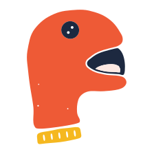
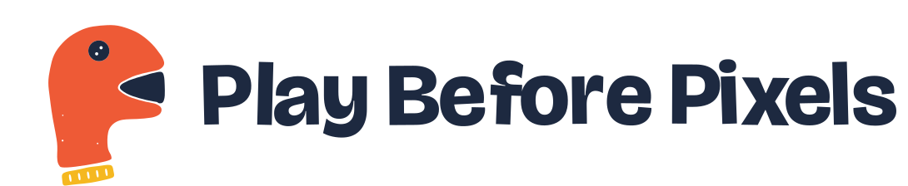
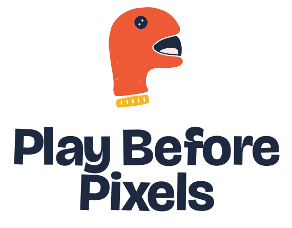
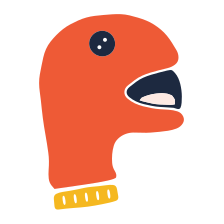
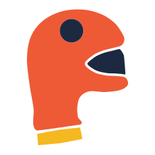
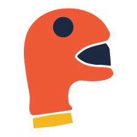

A sock puppet, cut from paper. A grown-up's hand gives it a voice, so it's talk, touch and play in one homemade toy with no screen and no batteries. The mouth is always open mid-word: your turn next.



Hand-cut pieces laid side by side, with a hairline of paper showing between them. Edges carry a slight scissor wobble. The wordmark is Bricolage Grotesque 800 drawn as paths, each letter nudged a hair like a hand-set stamp alphabet.


On dark grounds the puppet keeps its die-cut paper edge, like a real sticker, so the button and mouth never sink into the background. The words turn white.


Mirrored only when two puppets face each other in a layout.


Ink tee: full colour on its paper edge. Canvas tote: one-colour stamp.
The small cut works as a spine seal at 9 mm and as a round cover-corner sticker. Sample title for mock-up only.
Centred on its bounding box: the mouth and cuff stay well inside the circular crop.